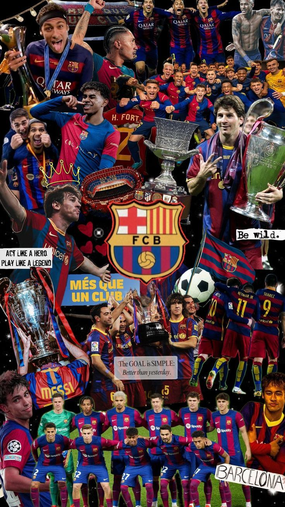
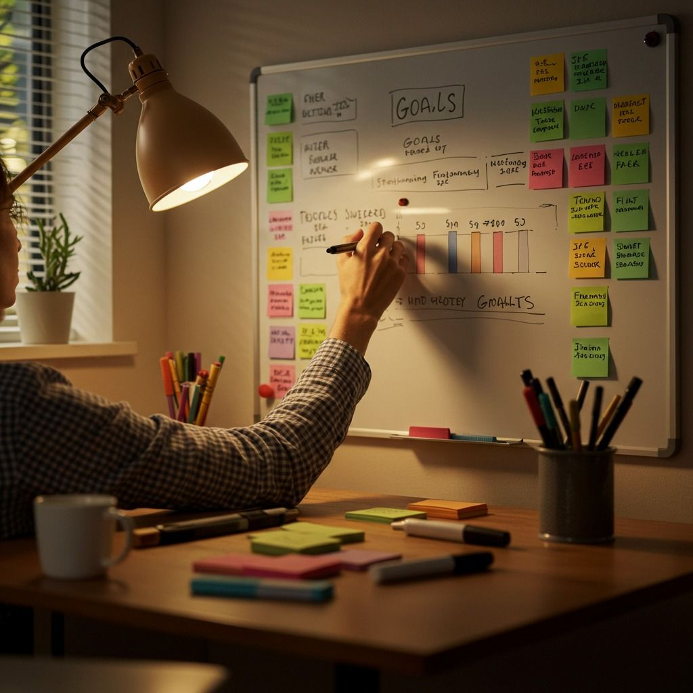

Tulisan & Opini
Cerita tentang Barca, teknologi, dan kehidupan kampus yang autentik.

“Més que un club” — empat kata yang bukan sekadar slogan, tapi identitas dan jiwa dari institusi yang lahir 125 tahun lalu di Catalonia.
FC Barcelona didirikan 1899 oleh Hans Gamper. Sejak awal, klub ini tidak pernah sekadar bermain sepak bola — mereka bermain demi identitas budaya dan harga diri rakyat Catalan.
Filosofi Tiki-Taka
Filosofi permainan yang dipopulerkan Johan Cruyff dan disempurnakan Pep Guardiola — penguasaan bola, pressing tinggi, dan sepak bola indah adalah DNA klub ini.
La Masia: Pabrik Bintang
Akademi La Masia melahirkan Xavi, Iniesta, dan Messi. Bukan hanya teknik, tapi nilai kejujuran dan kerja keras ditanamkan sejak dini.

Dua bahasa yang terlihat sederhana di permukaan, tapi menyimpan kedalaman yang bisa menghabiskan berbulan-bulan.
HTML: Kerangka Halaman
HTML adalah bahasa markup untuk menyusun struktur konten. Setiap elemen punya fungsinya — heading, paragraf, link, gambar, div — semuanya bekerja bersama.
CSS: Jiwa Halaman
Kalau HTML adalah kerangka bangunan, CSS adalah cat dinding dan furniturnya. Dengan CSS, halaman polos bisa jadi sesuatu yang elegan dan memorable.
Pelajaran Terbesar
Konsistensi mengalahkan intensitas. 30 menit setiap hari jauh lebih efektif dari 8 jam lalu berhenti seminggu.

Tiga hal yang sama-sama menyita waktu — tapi percayalah, ketiganya bisa berjalan beriringan dengan sistem yang tepat.
Jadwal Realistis
Kesalahan terbesar: jadwal terlalu sempurna yang tidak pernah dijalankan. Lebih baik jadwal sederhana tapi konsisten:
Coding dan Barca: Lebih Mirip dari Kelihatannya
Filosofi tiki-taka — kesabaran, kerja sama, konsistensi — sangat relevan dalam dunia coding. Tidak ada program besar yang dibangun seorang diri.